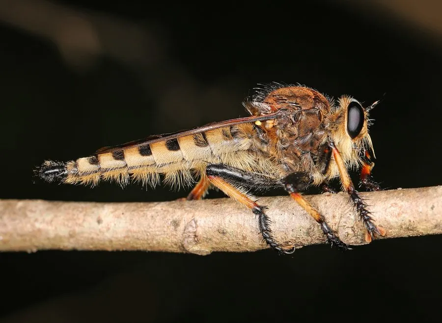

昆虫 · 动物界
大食虫虻 Promachus yesoensis

体型粗壮的食虫虻，复眼巨大，胸部多毛，常停在枝头或地面伏击飞虫，捕食蜂类、蝇类和蛾类，被称为昆虫中的猛禽。
- 分类
- 门节肢动物门纲昆虫纲目双翅目科食虫虻科属食虫虻属
- 栖息环境
- 林缘、草地、灌丛和农田，常停在枝梢或地面等候猎物
- 地理分布
- 中国大部分地区、日本和朝鲜半岛
- 保护级别
- IUCN 暂无评估；中国未列入国家重点保护名录
物种志
大食虫虻体长 2.5–3.5 cm，身体粗壮，胸部和腹部密生刚毛，体色灰褐或黄褐，复眼非常大，两眼在头顶几乎相接；口器坚硬如针，能刺穿猎物外壳，足粗壮并长有刺毛，便于抱住猎物。
它分布在中国、日本和朝鲜半岛，栖息于林缘、草地、灌丛和农田，常停在枝梢、石块或地面上等待猎物飞过，捕食蜂类、蝇类、蛾类甚至其他食虫虻。大食虫虻飞行迅速，能在空中截击猎物，抓住后用口器注入消化液再吸食。雌虫把卵产在土中或落叶层，幼虫在土壤中捕食其他昆虫幼虫。它对人一般无害，但被抓住时可能刺人，产生疼痛；它是农田和林地中重要的天敌昆虫，成虫寿命较短，多在夏季出现，目前尚无保护评估。
形态与习性
- 食性捕食蜂类、蝇类、蛾类和其他食虫虻
- 体长2.5–3.5 cm
- 识别复眼巨大，胸腹部密生刚毛，口器如针
- 习性停栖伏击，飞行迅速，空中截击猎物
- 幼虫生活在土壤中，捕食其他昆虫幼虫
- 生态作用农田和林地中的天敌昆虫
趣味知识
- 大食虫虻的复眼几乎在头顶相接，视野非常开阔。
- 它会在空中截击飞行的蜂和蝇，用针状口器刺穿猎物。
- 食虫虻虽然凶猛，但一般不会主动攻击人，除非被抓住。